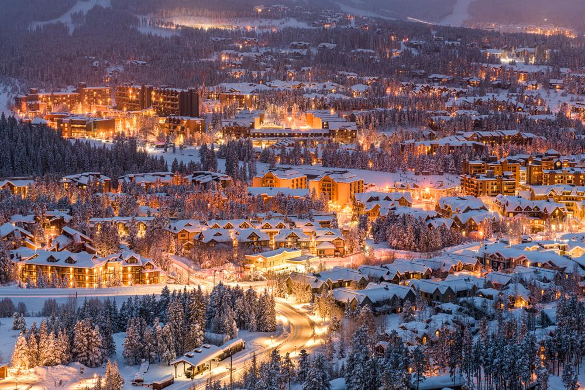

HomePage
Vail
Keystone
Breckinridge
Winter Park
Steamboat
Breckiridge
Breckenridge is a Colorado town at the base of the Rocky Mountains' Tenmile Range. It's known for its ski resort, year-round alpine activities and Gold Rush history.
The Victorian core of this former mining town is preserved as the Breckenridge National Historic District,
running primarily along Main Street, with colorfully painted buildings from the 1880s and '90s housing shops, galleries and restaurants.

Photo by: Nate Zeman
15 facts you didnt know about Breckinridge
- In 1859, gold was discovered along the Blue River in Colorado and a small mining town was created.
Originally called “Colorado's Kingdom,” Breckenridge was inadvertently left off the U.S. map in the mid-1800s until the mistake was discovered nearly a half a century later.
The town was officially named Breckenridge in 1961.
- On average, Breckenridge has 300 days of sunshine each year and 300+ inches of average snowfall, making it the perfect place for a winter vacation!
- Speaking of snowfall, Breckenridge gives thanks for the abundance of snow every year during Ullr Fest. It's a celebration of snow, tradition, and fun!
- In 1984, Breckenridge became Colorado's first major resort to allow snowboarding.
- Breckenridge is home to more than 200 shops and almost 100 restaurants and bars!
- The movie “Dumb and Dumber” was filmed in Breckenridge, not Aspen, and “National Lampoon's Christmas Vacation” was filmed nearby in Frisco, 9 miles away.
- The Breckenridge Ski Resort boasts 187 trails spread across five huge peaks, totaling 2,908 acres of ski-able terrain.
- Breckenridge is one of the largest historical districts in Colorado with more than 200 structures on the National Register of Historic Places.
- Free WIFI for all! Free Wi-Fi hotspots are provided by the Town of Breckenridge at no charge as a courtesy to our residents and visitors.
- In 1887, Colorado's largest piece of gold was discovered near Breckenridge. Nicknamed “Tom's Baby”, weighing around 13.5 pounds.
- During the Big Snow Winter of 1889, it snowed for 79 days! On flat ground, the snow reached a depth of 20 feet.
- The base town elevation is 9,600 feet, and the top elevation on mountain reaches 12,998 feet.
Because of this, Breckenridge is home to the highest chairlift in North America, the Imperial Express Superchair, leading to the top of peak 8.
- The town of Breckenridge is 7 miles long and 2 miles wide.
- In the summer, the average temperature is 70°F in the day and 50°F at night, making it a top destination to escape the summer heat that hits a lot of other states.
- Breckenridge is home to many Olympic athletes including freestyle skiers Keri Herman and Bobby Brown, halfpipe snowboarders Arielle Gold and Steve Fisher, Nordic skier Matthew Dayton, rower Greg Ruckman and speed skier, C.J. Mueller.

Image by: shuttershock.com